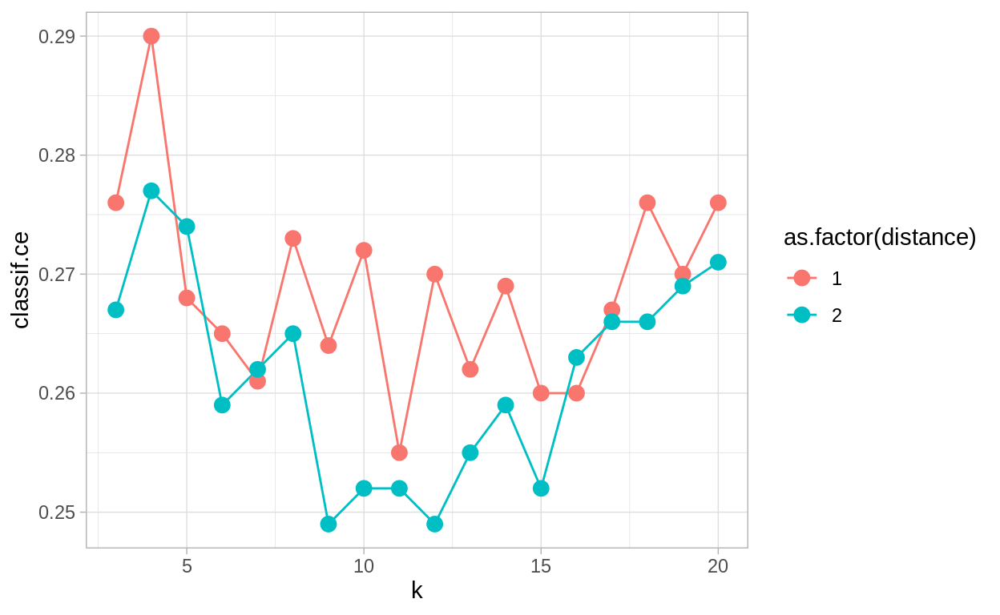
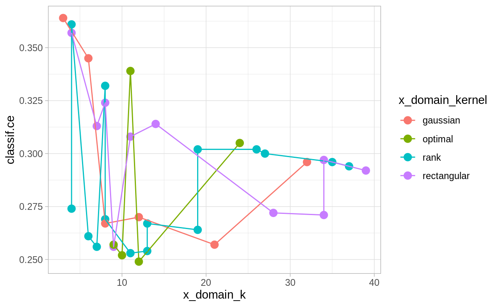
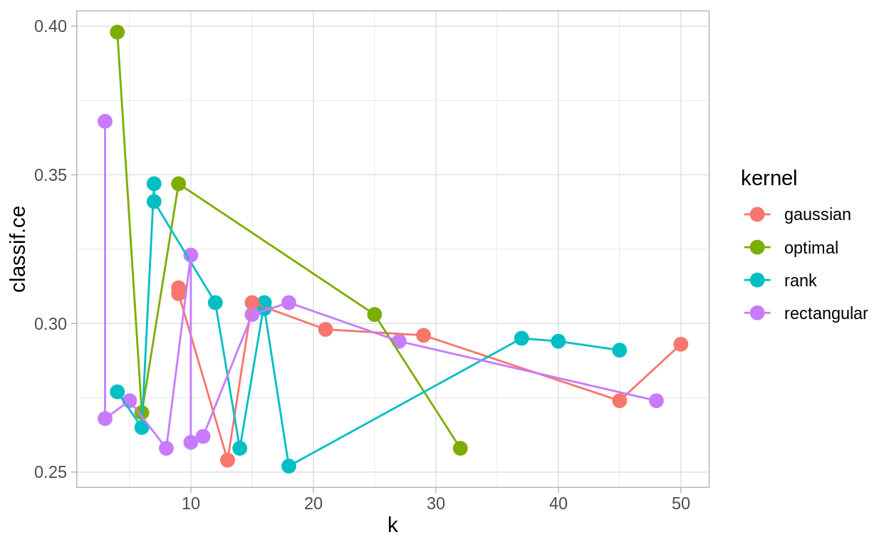
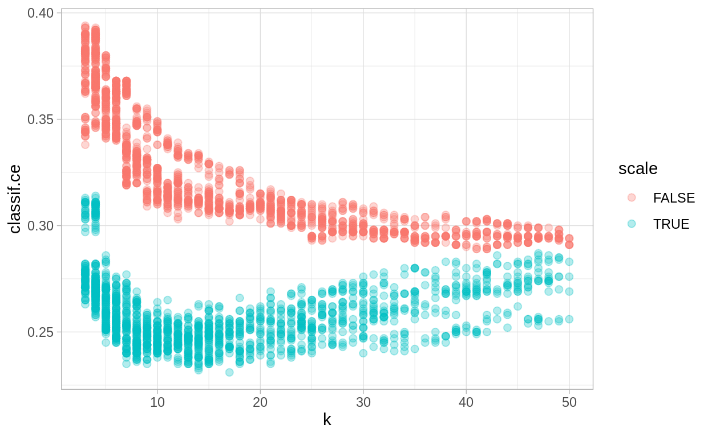
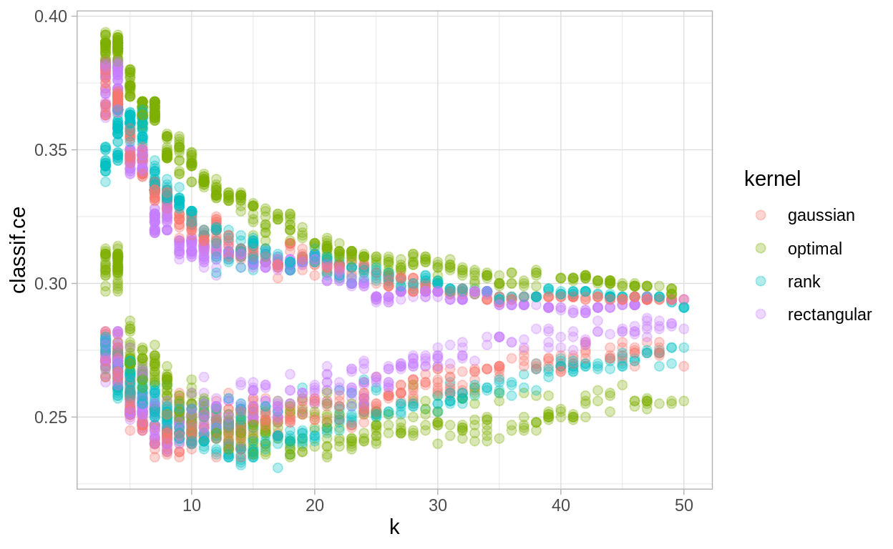
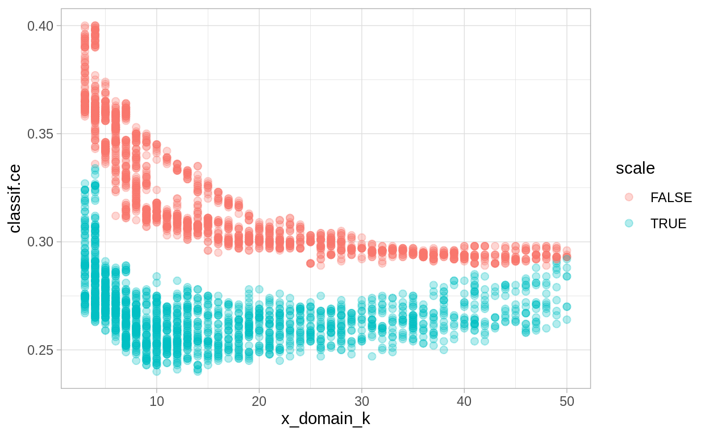
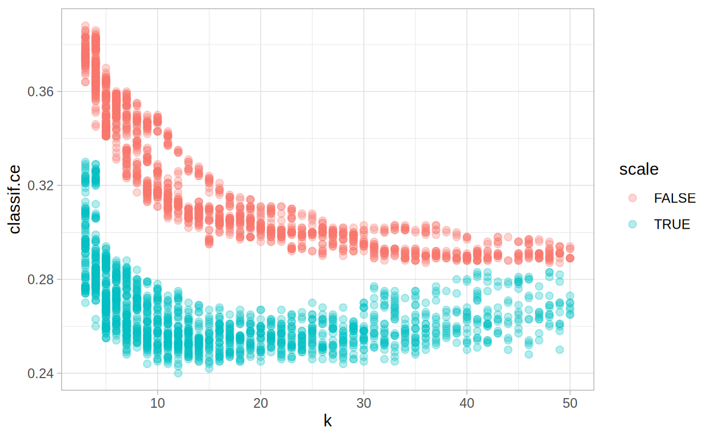

We evaluate all algorithms using 10-fold cross-validation. We use a fixed train-test split, i.e. the same splits for each evaluation. Otherwise, some evaluation could get unusually “hard” splits, which would make comparisons unfair.
This is the second part in a serial of tutorials. The other parts of this series can be found here:
In this case we will continue working with the German Credit Dataset. Yesterday we peeked into the data set by using and comparing some learners with ther default parameters. We will now see how to:
We expect you have installed all packages from day 1. If not, load the day 1 script and run the Prerequisites install chunk.
Load the packages we are going to use:
library("data.table")
library("mlr3")
library("mlr3learners")
library("mlr3tuning")
library("ggplot2")We use the same data as in the earlier blog posts.
task = tsk("german_credit")Also, because tuning often takes a long time, we want to make more efficient use of our multicore CPUs. Don’t do this on rstudio cloud, however.
# future::plan("multiprocess")We evaluate all algorithms using 10-fold cross-validation. We use a fixed train-test split, i.e. the same splits for each evaluation. Otherwise, some evaluation could get unusually “hard” splits, which would make comparisons unfair.
set.seed(8008135)
cv10_instance = rsmp("cv", folds = 10)
## fix the train-test splits using the $instantiate() method
cv10_instance$instantiate(task)
## have a look at the test set instances per fold
cv10_instance$instance
row_id fold
1: 5 1
2: 20 1
3: 28 1
4: 35 1
5: 37 1
---
996: 936 10
997: 950 10
998: 963 10
999: 985 10
1000: 994 10paradox package for search space definition of the hyperparametersmlr3tuning package for tuning the hyperparameters
library("mlr3tuning")
library("paradox")Learner to optimize. We will use "classif.kknn", the “kernelized” k-nearest neighbor classifier. kknn as a normal kNN without weighting first (i.e., use the rectangular kernel):
knn = lrn("classif.kknn", predict_type = "prob")
## use rectangular kernel for normal kNN
knn$param_set$values$kernel = "rectangular"
knn$param_set
ParamSet:
id class lower upper
1: k ParamInt 1 Inf
2: distance ParamDbl 0 Inf
3: kernel ParamFct NA NA
4: scale ParamLgl NA NA
5: ykernel ParamUty NA NA
levels default
1: 7
2: 2
3: rectangular,triangular,epanechnikov,biweight,triweight,cos,... optimal
4: TRUE,FALSE TRUE
5:
value
1:
2:
3: rectangular
4:
5: k parameter from 3 to 20 and the distance function (either L1 or L2). To do so, we use the paradox package to define a search space (see Appendix for a short list of possible parameter types).
searchspace = ParamSet$new(list(
ParamInt$new("k", lower = 3, upper = 20),
ParamInt$new("distance", lower = 1, upper = 2)
))
instance_grid = TuningInstance$new(
task = task,
learner = knn,
resampling = cv10_instance,
measures = msr("classif.ce"),
param_set = searchspace,
terminator = term("none")
)"grid_search" tuner for this
set.seed(1)
tuner_grid = tnr("grid_search", resolution = 18, batch_size = 36)$tune(). Note that it modifies our “tuning instance”–the result can be found in the instance object.
## empty instance object:
instance_grid$result
$tune_x
NULL
$params
$params$kernel
[1] "rectangular"
$perf
NULL
## now run tuning:
tuner_grid$tune(instance_grid)$result slot. We can also plot the performance.
instance_grid$result
$tune_x
$tune_x$k
[1] 9
$tune_x$distance
[1] 2
$params
$params$kernel
[1] "rectangular"
$params$k
[1] 9
$params$distance
[1] 2
$perf
classif.ce
0.249 Learner actually saw)
perfdata = instance_grid$archive("params")
perfdata[, c("nr", "k", "distance", "classif.ce")]
nr k distance classif.ce
1: 1 3 1 0.276
2: 2 3 2 0.267
3: 3 4 1 0.290
4: 4 4 2 0.286
5: 5 5 1 0.268
6: 6 5 2 0.274
7: 7 6 1 0.268
8: 8 6 2 0.274
9: 9 7 1 0.261
10: 10 7 2 0.262
11: 11 8 1 0.273
12: 12 8 2 0.260
13: 13 9 1 0.264
14: 14 9 2 0.249
15: 15 10 1 0.263
16: 16 10 2 0.259
17: 17 11 1 0.255
18: 18 11 2 0.252
19: 19 12 1 0.273
20: 20 12 2 0.252
21: 21 13 1 0.262
22: 22 13 2 0.255
23: 23 14 1 0.261
24: 24 14 2 0.253
25: 25 15 1 0.260
26: 26 15 2 0.252
27: 27 16 1 0.263
28: 28 16 2 0.258
29: 29 17 1 0.267
30: 30 17 2 0.266
31: 31 18 1 0.274
32: 32 18 2 0.268
33: 33 19 1 0.270
34: 34 19 2 0.269
35: 35 20 1 0.265
36: 36 20 2 0.270
nr k distance classif.ce
ggplot(perfdata, aes(x = k, y = classif.ce, color = as.factor(distance))) +
geom_line() + geom_point(size = 3)
distance = 2) seems to work better, but there is much randomness introduced by the resampling instance, so you may see a different result!k between 10 and 15 perform wellk to large values (50).k = 3 and k = 4 is probably larger than the difference between k = 49 and k = 50.
k and sample values on the log-space.k from log(3) to log(50) and exponentiate in the transformation.k, we must use ParamDbl instead of ParamInt now!
large_searchspace = ParamSet$new(list(
ParamDbl$new("k", lower = log(3), upper = log(50)),
ParamDbl$new("distance", lower = 1, upper = 3),
ParamFct$new("kernel", c("rectangular", "gaussian", "rank", "optimal")),
ParamLgl$new("scale")
))
large_searchspace$trafo = function(x, param_set) {
x$k = round(exp(x$k))
x
}k, distance, kernel, and the two values for scale will take 54 evaluations.
tuner_random = tnr("random_search", batch_size = 36)
instance_random = TuningInstance$new(
task = task,
learner = knn,
resampling = cv10_instance,
measures = msr("classif.ce"),
param_set = large_searchspace,
terminator = term("evals", n_evals = 36)
)
tuner_random$tune(instance_random)
instance_random$result
$tune_x
$tune_x$k
[1] 2.883326
$tune_x$distance
[1] 2.210032
$tune_x$kernel
[1] "rank"
$tune_x$scale
[1] TRUE
$params
$params$kernel
[1] "rank"
$params$k
[1] 18
$params$distance
[1] 2.210032
$params$scale
[1] TRUE
$perf
classif.ce
0.252 "tune_x" parameters (the points we sampled on the search space, before transformation):
perfdata = instance_random$archive("tune_x")
perfdata[, c("k", "distance", "kernel", "scale", "classif.ce")]
k distance kernel scale classif.ce
1: 2.161569 2.640253 gaussian FALSE 0.312
2: 2.627261 1.073312 rank TRUE 0.258
3: 3.312797 2.251166 rectangular FALSE 0.294
4: 1.999786 1.866958 rank FALSE 0.347
5: 3.456359 1.713852 optimal TRUE 0.258
6: 3.907720 2.547335 gaussian FALSE 0.293
7: 1.699115 1.346904 rectangular TRUE 0.274
8: 2.328907 1.986418 rectangular FALSE 0.323
9: 2.164135 2.474378 gaussian FALSE 0.310
10: 3.815176 2.022002 gaussian TRUE 0.274
11: 2.902336 1.950174 rectangular FALSE 0.307
12: 3.366602 2.175800 gaussian FALSE 0.296
13: 3.684312 2.145075 rank FALSE 0.294
14: 1.263541 2.309835 rank TRUE 0.277
15: 2.442418 2.730251 rank FALSE 0.307
16: 3.059230 1.793693 gaussian FALSE 0.298
17: 1.224292 2.920232 rectangular FALSE 0.368
18: 3.227954 1.761755 optimal FALSE 0.303
19: 2.763233 1.340177 rank FALSE 0.307
20: 2.533847 1.463210 gaussian TRUE 0.254
21: 2.371967 2.899840 rectangular TRUE 0.262
22: 1.170304 1.167016 rectangular TRUE 0.268
23: 3.804673 1.386088 rank FALSE 0.291
24: 3.877214 1.149391 rectangular TRUE 0.274
25: 2.883326 2.210032 rank TRUE 0.252
26: 2.295835 1.431686 rectangular TRUE 0.260
27: 1.848740 2.175975 optimal TRUE 0.270
28: 1.325287 1.457795 optimal FALSE 0.398
29: 2.027436 1.781850 rectangular TRUE 0.258
30: 3.613942 1.695812 rank FALSE 0.295
31: 1.961416 2.836759 rank FALSE 0.341
32: 2.230796 1.224078 optimal FALSE 0.347
33: 2.712923 1.509952 gaussian FALSE 0.307
34: 2.778186 1.373248 rank FALSE 0.305
35: 2.702305 2.491087 rectangular FALSE 0.303
36: 1.712136 2.865938 rank TRUE 0.265
k distance kernel scale classif.ce"params" parameters (the points the Learner was used with—these are the exp()’d parameters, after transformation of the sampled points):
perfdata = instance_random$archive("params")
perfdata[, c("k", "distance", "kernel", "scale", "classif.ce")]
k distance kernel scale classif.ce
1: 9 2.640253 gaussian FALSE 0.312
2: 14 1.073312 rank TRUE 0.258
3: 27 2.251166 rectangular FALSE 0.294
4: 7 1.866958 rank FALSE 0.347
5: 32 1.713852 optimal TRUE 0.258
6: 50 2.547335 gaussian FALSE 0.293
7: 5 1.346904 rectangular TRUE 0.274
8: 10 1.986418 rectangular FALSE 0.323
9: 9 2.474378 gaussian FALSE 0.310
10: 45 2.022002 gaussian TRUE 0.274
11: 18 1.950174 rectangular FALSE 0.307
12: 29 2.175800 gaussian FALSE 0.296
13: 40 2.145075 rank FALSE 0.294
14: 4 2.309835 rank TRUE 0.277
15: 12 2.730251 rank FALSE 0.307
16: 21 1.793693 gaussian FALSE 0.298
17: 3 2.920232 rectangular FALSE 0.368
18: 25 1.761755 optimal FALSE 0.303
19: 16 1.340177 rank FALSE 0.307
20: 13 1.463210 gaussian TRUE 0.254
21: 11 2.899840 rectangular TRUE 0.262
22: 3 1.167016 rectangular TRUE 0.268
23: 45 1.386088 rank FALSE 0.291
24: 48 1.149391 rectangular TRUE 0.274
25: 18 2.210032 rank TRUE 0.252
26: 10 1.431686 rectangular TRUE 0.260
27: 6 2.175975 optimal TRUE 0.270
28: 4 1.457795 optimal FALSE 0.398
29: 8 1.781850 rectangular TRUE 0.258
30: 37 1.695812 rank FALSE 0.295
31: 7 2.836759 rank FALSE 0.341
32: 9 1.224078 optimal FALSE 0.347
33: 15 1.509952 gaussian FALSE 0.307
34: 16 1.373248 rank FALSE 0.305
35: 15 2.491087 rectangular FALSE 0.303
36: 6 2.865938 rank TRUE 0.265
k distance kernel scale classif.ceLet’s look at some plots of performance by parameter. - The following suggests that scale has a strong influence on performance.
ggplot(perfdata, aes(x = k, y = classif.ce, color = scale)) +
geom_point(size = 3) + geom_line()
ggplot(perfdata, aes(x = k, y = classif.ce, color = kernel)) +
geom_point(size = 3) + geom_line()
What performance do we expect from our tuned method? Naive evaluation:
instance_random$result$perf
classif.ce
0.252
instance_grid$result$perf
classif.ce
0.249 The mlr3tuning package provides an AutoTuner that acts like our tuning method is actually a Learner!
$train() method:
$predict() method: use model trained on the whole training data as model.AutoTuner does exactly this.
grid_auto = AutoTuner$new(
learner = knn,
resampling = rsmp("cv", folds = 5), # we can NOT use fixed resampling here
measures = msr("classif.ce"),
tune_ps = searchspace,
terminator = term("none"),
tuner = tnr("grid_search", resolution = 18)
)Learner. It can be used to combine the steps of hyperparameter tuning and model fitting, but is especially useful for resampling and fair comparison of performance through benchmarking.
resample(task, grid_auto, cv10_instance)$aggregate()It is always interesting to look at what could have been. The following dataset contains an optimization run result with 3600 evaluations–more than above by a factor of 100.
perfdata # obtained from mlr-outreach github repository
nr batch_nr task_id learner_id resampling_id iters warnings errors
1: 1 1 new_credit classif.kknn cv 10 0 0
2: 2 1 new_credit classif.kknn cv 10 0 0
3: 3 1 new_credit classif.kknn cv 10 0 0
4: 4 1 new_credit classif.kknn cv 10 0 0
5: 5 1 new_credit classif.kknn cv 10 0 0
---
3596: 3596 1 new_credit classif.kknn cv 10 0 0
3597: 3597 1 new_credit classif.kknn cv 10 0 0
3598: 3598 1 new_credit classif.kknn cv 10 0 0
3599: 3599 1 new_credit classif.kknn cv 10 0 0
3600: 3600 1 new_credit classif.kknn cv 10 0 0
classif.ce tune_x kernel k distance scale
1: 0.348 <list> rank 6 1.069610 FALSE
2: 0.297 <list> rank 40 1.077027 FALSE
3: 0.321 <list> gaussian 10 2.890817 FALSE
4: 0.256 <list> rank 5 2.541628 TRUE
5: 0.299 <list> optimal 45 2.921566 FALSE
---
3596: 0.297 <list> rectangular 30 1.185884 FALSE
3597: 0.342 <list> rank 7 1.678671 FALSE
3598: 0.311 <list> optimal 22 1.688389 FALSE
3599: 0.273 <list> rectangular 28 1.940716 TRUE
3600: 0.351 <list> rank 3 2.683639 FALSE
ggplot(perfdata, aes(x = k, y = classif.ce, color = scale)) +
geom_point(size = 2, alpha = 0.3)
ggplot(perfdata, aes(x = k, y = classif.ce, color = kernel)) +
geom_point(size = 2, alpha = 0.3)
(5, 30) x (0.2, 0.3) and do loess smoothing we see that different kernels have their optimum at different k.
ggplot(perfdata, aes(x = k, y = classif.ce, color = kernel,
group = interaction(kernel, scale))) +
geom_point(size = 2, alpha = 0.3) + geom_smooth() +
xlim(5, 30) + ylim(0.2, 0.3)
distance parameter? If we select all results with k between 10 and 20 and plot distance and kernel we see an approximate relationship
ggplot(perfdata[k > 10 & k < 20 & scale == TRUE],
aes(x = distance, y = classif.ce, color = kernel)) +
geom_point(size = 2) + geom_smooth()
scale makes a lot of differencedistance seems to make the least differencedistance values that usually give similar results. This is why random search works well.scale = FALSE performs badly and not try out so many points with that one.paradox primerInitialization:
ParamSet$new(list( <PARAMETERS> ))Possible parameter types:
## - logical (values TRUE, FALSE)
ParamLgl$new("parameter_id")
## - factorial (discrete values from a list of 'levels')
ParamFct$new("parameter_id", c("value1", "value2", "value3"))
## - integer (from 'lower' to 'upper' bound)
ParamInt$new("parameter_id", lower = 0, upper = 10)
## - numeric (from 'lower' to 'upper' bound)
## - unfortunately named after the storage type, "double precision floating point"
ParamDbl$new("parameter_id", lower = 0, upper = 10)
## Also possible: "untyped", but we can not tune with this!
ParamUty$new("parameter_id")So an example parameter set with one logical parameter "flag" and one integer parameter "count":
ParamSet$new(list(
ParamLgl$new("flag"),
ParamInt$new("count", lower = 0, upper = 10)
))
ParamSet:
id class lower upper levels default value
1: flag ParamLgl NA NA TRUE,FALSE <NoDefault>
2: count ParamInt 0 10 <NoDefault> See the online vignette of paradox for a more complete introduction.